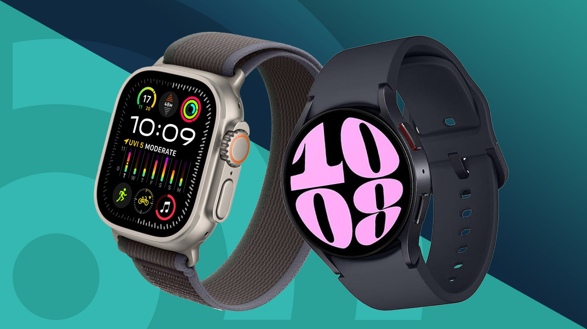
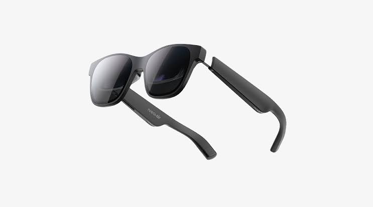
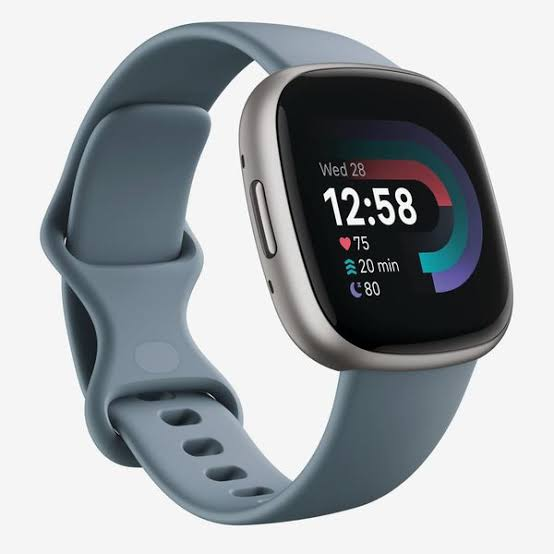
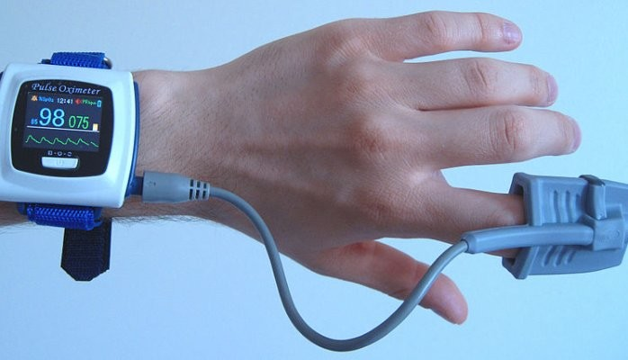

Smartwatches
Smartwatches are cutting-edge devices that blend the classic charm of a watch with modern technology, keeping you connected and helping you manage your health effortlessly. With features such as notifications, fitness, and customizable designs, they can enhance your daily routine. Want discover the latest smartwatch technology?
Read More

Smart Glasses
Smart glasses are innovative wearable devices that integrate technology into eyewear, allowing users to access information, communicate, and interact with their environment in a hands-free manner. These glasses typically feature augmented reality (AR) capabilities, allowing users to overlay digital information onto their real-world surroundings. With functionalities like navigation, notifications, and even camera features, smart glasses are transforming the way we experience the world.
Read More

Fitness Trackers
Fitness trackers are wearable devices designed to monitor and analyze physical activity, helping users stay on top of their health and fitness goals. These gadgets typically track metrics such as steps taken, heart rate, calories burned, and even sleep patterns. With real-time data and insights, fitness trackers can motivate users to lead a more active lifestyle and make informed decisions about their wellness.
Read More

Medical Wearables
Medical wearables are advanced devices designed to monitor health metrics and provide real-time data to both users and healthcare professionals. These wearables can track vital signs such as heart rate, blood pressure, glucose levels, and more, offering valuable insights for managing chronic conditions and overall wellness. By enabling continuous health monitoring, medical wearables empower individuals to take charge of their health and enhance communication with their healthcare providers.
Read More